Exercise 3 — Business Object Events: Real-time SAP Notifications
In this exercise you will subscribe to SAP Business Object events using the Boomi for SAP UI and then build a Boomi Web Services Server process that listens for those events in real time.
- How to create a Business Object event subscription in the Boomi for SAP UI
- How to create a Boomi Topic to receive event payloads
- How to configure a Web Services Server listener process in Boomi AtomSphere
- How to trigger and verify SAP events end-to-end
Flow
- Section 1 — Subscribe to the Sales Order CHANGED event via the Boomi for SAP UI
- Section 2 — Create a Boomi process with a Web Services Server listener
- Section 3 — Trigger the event in SAP and verify delivery
Create a Business Object Event Subscription
-
1
Log in to the Boomi for SAP UI.
-
2
In the Create menu, click Event → Business Object Event.
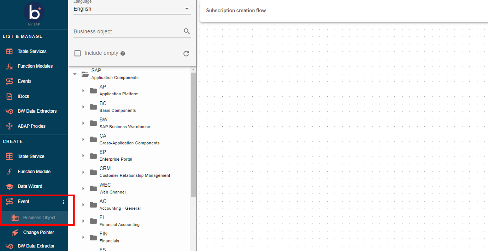
Navigate to Business Object Event -
3
Search for the Business Object BUS2032 (Sales Order) and drag it onto the canvas.

Add BUS2032 to canvas -
4
Select the frequency radio button Realtime and the event type CHANGED. Click Continue.

Select Realtime CHANGED event -
5
Set Deployment Mode to Local and click Continue.

Set Deployment Mode to Local -
6
Select the receiver BOOMI SC TRAINING and click Continue.
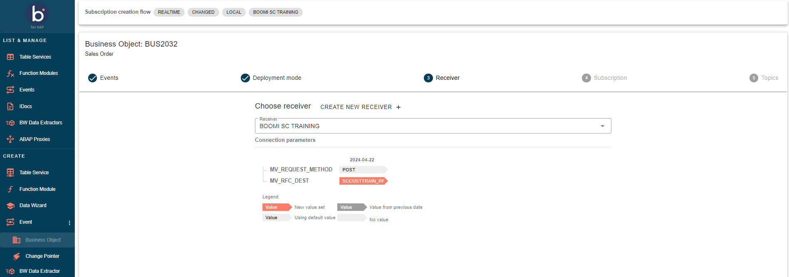
Select receiver BOOMI SC TRAINING
Configure Subscription & Create Topic
-
7
In the Subscription ID field, enter a unique identifier using your initials (e.g.,
SALESCHANGE_XX).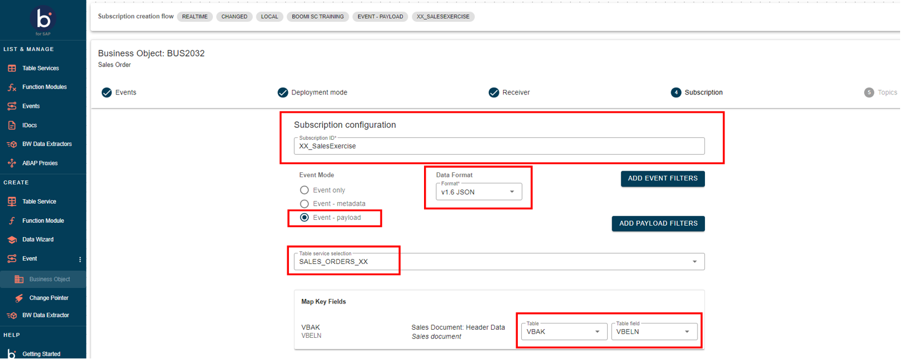
Enter Subscription ID -
8
Click Create New Topic. Set:
Field Default Value Deployment Mode LocalTopic ID SALESEXERCISE_XX (replace XX with your initials)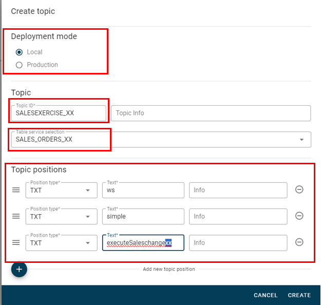
Create New Topic -
9
Once the topic is created, click Create Subscription to finalize.
Note the Simple URL PathThe Web Services Server URL path used in Section 2 will be derived from the Object name you set in the Boomi process operation. It should match the Topic ID pattern.
Create the Boomi Listener Process
-
10
In Boomi AtomSphere, navigate to your USERXX folder and create a new process by clicking New Component → Process.
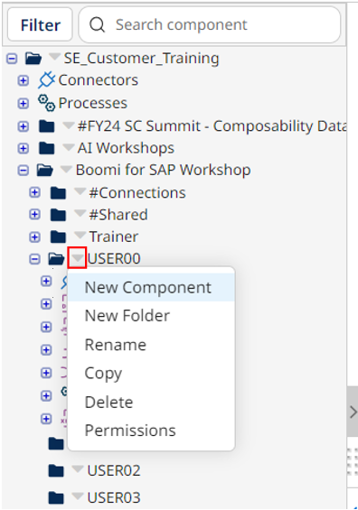
New Component menu 
Select Process type -
11
Configure the Start shape: set type to Connector, select the Web Services Server connector, and set Action to Listen.

Configure Start shape — Web Services Server -
12
Configure the connector operation with these values:
Field Default Value Operation Type EXECUTEObject Saleschangexx (replace xx with your initials)Expected Input Type Single JSON ObjectRequest Profile Boomi for SAP connector SALES_ORDERS_XX Query ResponseResponse Output Type Single Data
Web Services Server operation configuration -
13
Click Save and Close, then OK to return to the canvas.
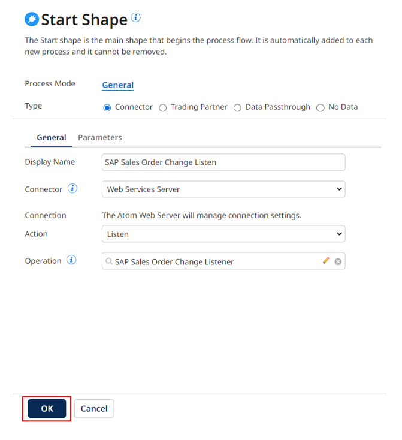
Return to canvas -
14
Add a Return Documents shape to the canvas and connect it to the Start shape.

Add Return Documents shape
Deploy the Process
-
15
Save the process. Then click Create Packaged Component and deploy the process to the Boomi Training Dev environment.
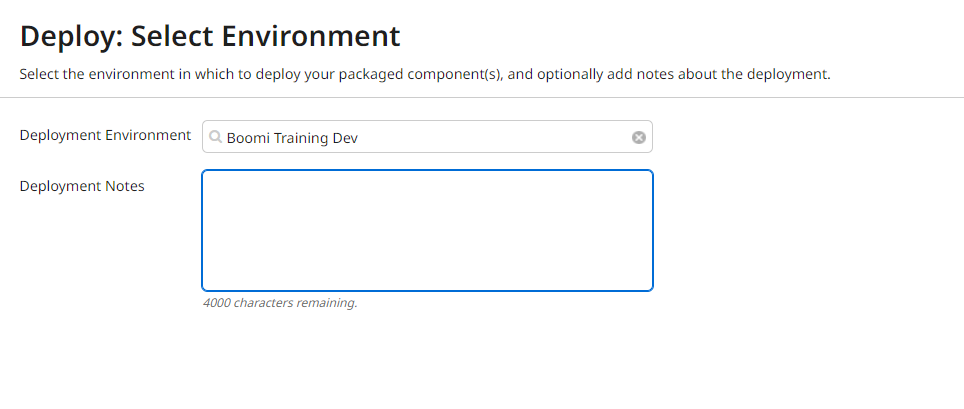
Deploy process to Boomi Training Dev
Trigger the Event in SAP & Verify
-
16
Log in to the SAP client where Boomi for SAP is installed.
-
17
Navigate to transaction VA02 (Change Sales Order) by typing
VA02in the transaction code box and pressing Enter.
Enter VA02 transaction code -
18
Enter a Sales Order number and press Enter to open it.

Open Sales Order in VA02 -
19
Change a field value — for example, the Payment Terms field. Save the order by clicking the Floppy Disk icon.
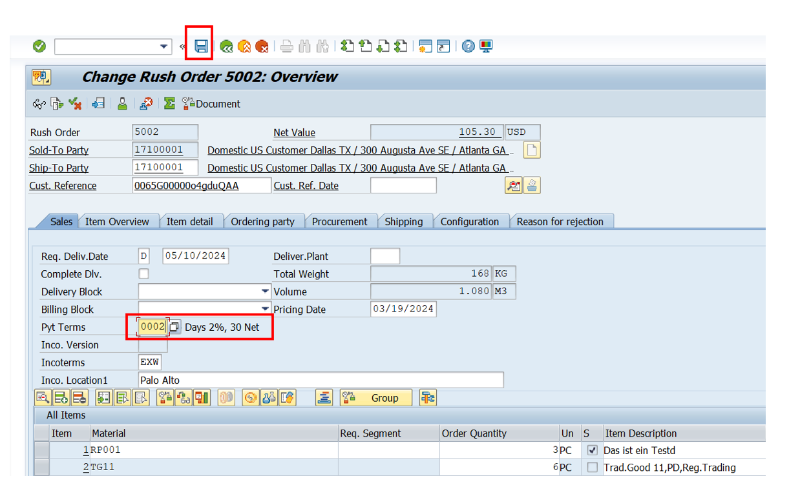
Change field and save -
20
Return to Boomi AtomSphere. Open Process Reporting — the SAP event should appear as an execution record.
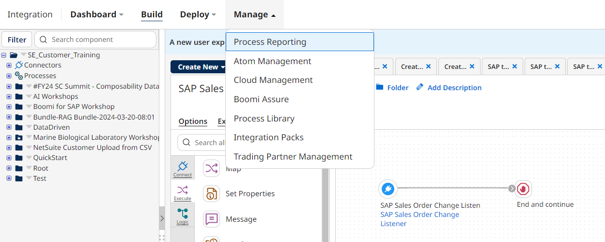
Event appears in Process Reporting -
21
Click the timestamp of the event, then click the Web Services Server shape's Successes link.

Click event timestamp 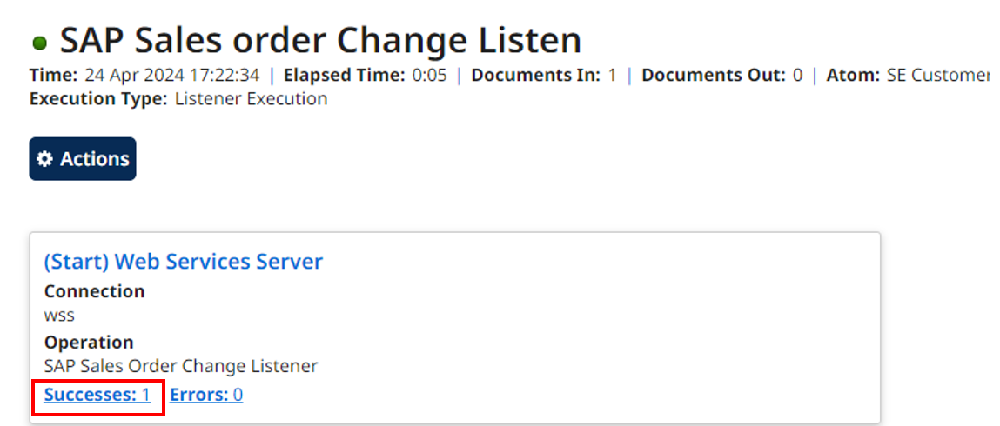
Click Successes link -
22
Click the gear icon under Actions and select View Document to inspect the SAP event payload.
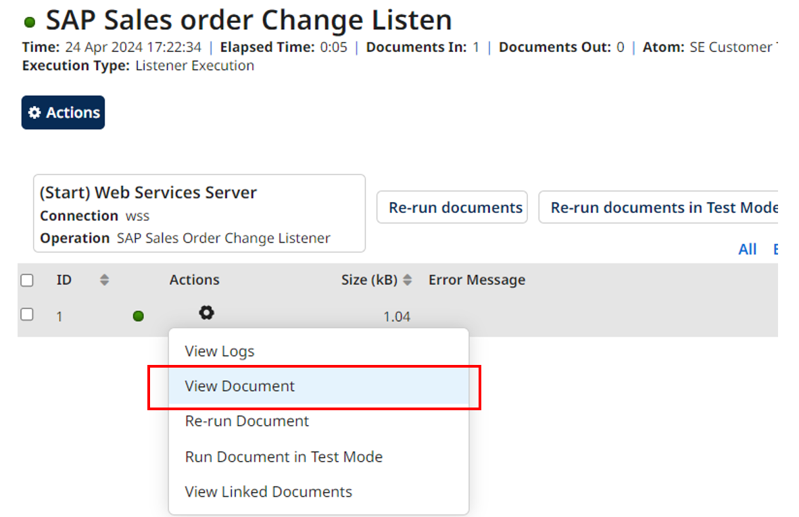
View Document payload 
SAP event payload JSON Congratulations!You have successfully subscribed to a real-time SAP Business Object event and verified the payload delivery through Boomi.